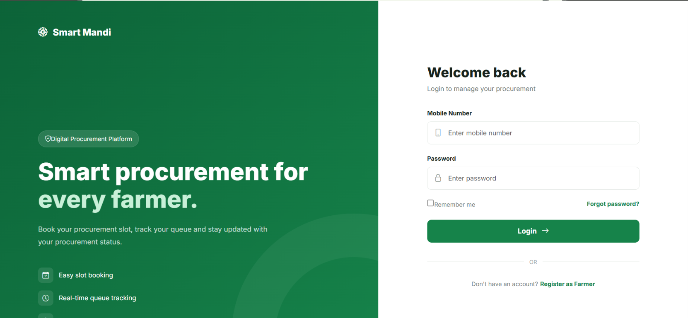
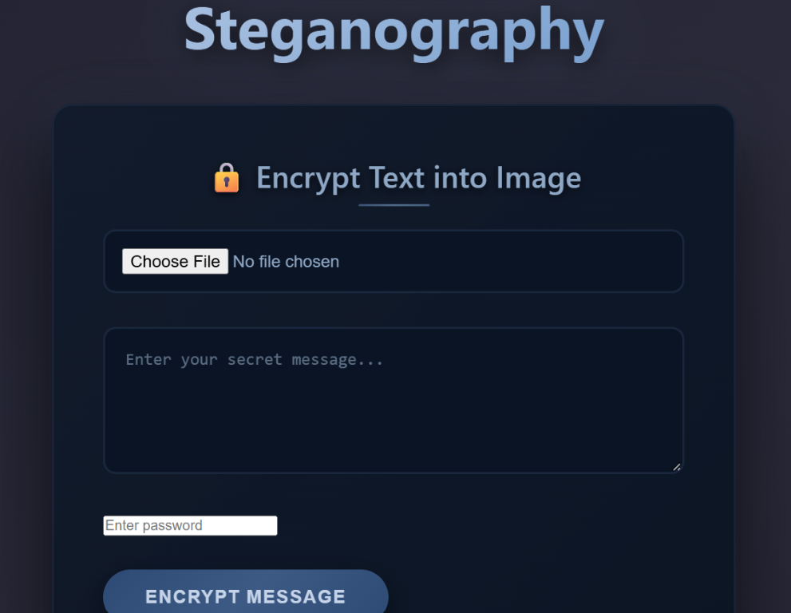

Frontend
React.js, JavaScript ES6+, HTML5, CSS3, Responsive Design, AJAX, Axios, EJS
Available for opportunities
I’m Sonal, an AI & Software Developer building intelligent applications with Python, machine learning, React.js, APIs, and full stack solutions.
About me
Software Engineer with hands-on experience in frontend and web development using React.js, JavaScript, HTML5, and CSS3.
I work across the full stack with Node.js, Express.js, Python, Flask, MongoDB, MySQL, REST APIs, and Git—combining strong problem-solving with clean, responsive interfaces.
Technical toolkit
React.js, JavaScript ES6+, HTML5, CSS3, Responsive Design, AJAX, Axios, EJS
Node.js, Express.js, Flask, Django, REST APIs, Microservices, Authentication
JavaScript, Python, C, C++, Java, SQL
MongoDB, MySQL, Git, GitHub, Linux, Render, Vercel, Multer, Passport.js
Python, TensorFlow, PyTorch, Scikit-learn, Machine Learning, REST API Integration, Generative AI
Selected work

SIH 2026 · Problem Statement 32 · Mandi Platform
A digital procurement platform that helps farmers book procurement slots, track queues in real time, and receive procurement updates.
Data Structures & Algorithms · Visualization
An interactive algorithm visualization tool that demonstrates sorting techniques through animated comparisons and array operations.

Full Stack · Flask · Security
Hide encrypted text inside images using password protection and a secure Flask backend, with separate encryption and extraction workflows.
AI Application · REST API
Automated code analysis powered by Google Generative AI, with syntax highlighting and structured feedback.
Social Platform · Backend
A scalable image-sharing platform with authentication, RESTful APIs, media uploads, and AI-driven features.
Experience
IBM · Lucknow
Built ML models with TensorFlow, PyTorch, and Scikit-learn. Used Jupyter Notebook and Anaconda for analysis, visualization, API data collection, and web scraping.
View internship certificate ↗IBM · Lucknow
Developed RESTful APIs and microservices with Node.js and Express.js, plus full stack features and data analytics workflows.
Achievement
College-level winner for Smart Mandi: Farmer Procurement (Problem Statement 32). Building the prototype into a complete application.
Resume
Download Sonal Jaiswal's complete resume as a PDF.
Get in touch
I’m open to frontend, React, web development, and software engineering opportunities.